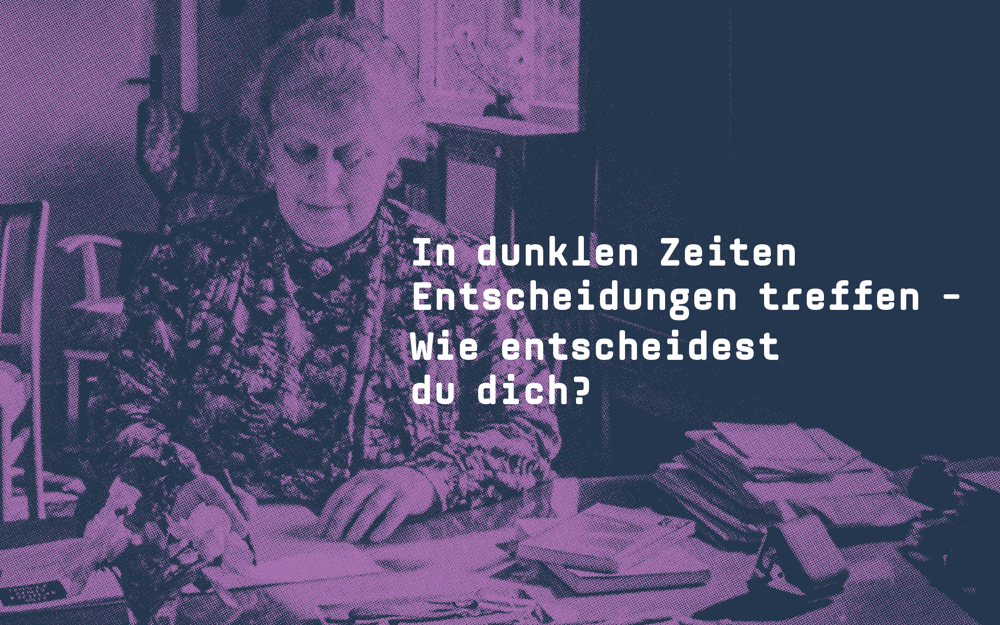

Nach 1933 durfte Helene Weber keine öffentlichen Ämter mehr ausüben. Dennoch zog sie sich nicht vollständig zurück, sondern engagierte sich weiter im katholischen Fürsorgerinnenverein. Trotz wachsender Überwachung blieb sie ihren Überzeugungen treu und lehnte das NS-Regime klar ab. Ihr Verhalten wurde zu einem Beispiel für stillen, aber entschlossenen Widerstand. In einer Zeit der Angst und Unterdrückung hielt sie an demokratischen Werten fest und unterstützte Menschen, wo sie konnte – oft im Verborgenen und unter großer persönlicher Gefahr.
Ausschnitt aus der berühmten Rede des SPD-Vorsitzenden Otto Wels gegen das Ermächtigungsgesetz vom 23. März 1933 vor dem Reichstag. Wels betonte in seiner Rede die Unbeugsamkeit der Sozialdemokraten.